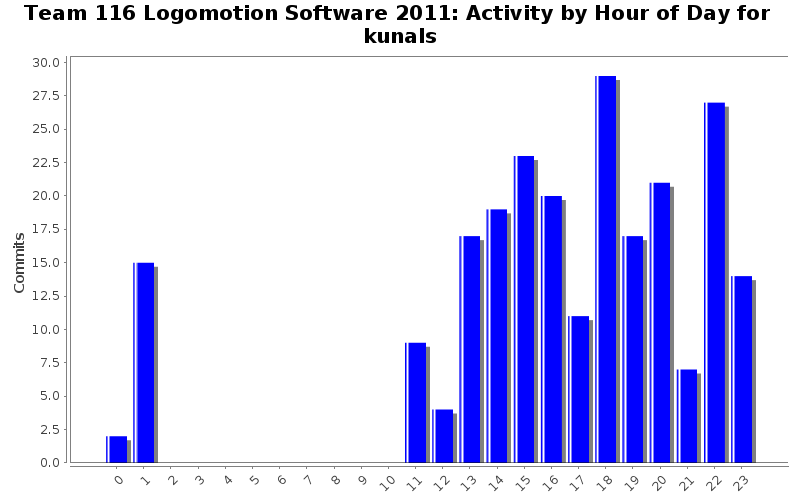
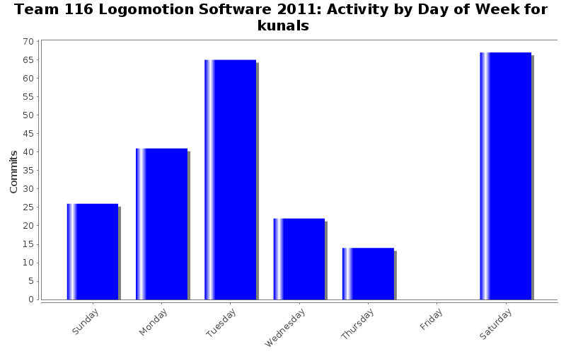
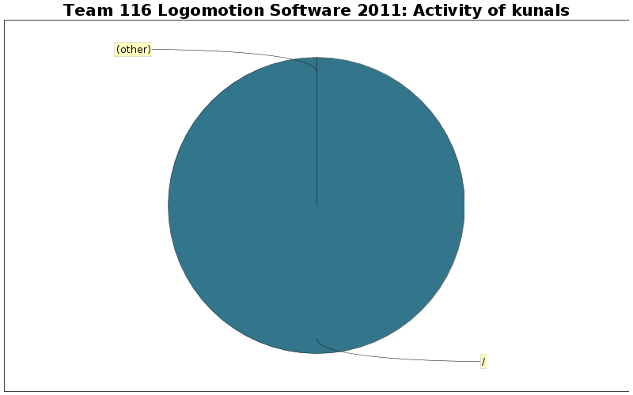

| Directory | Changes | Lines of Code | Lines per Change |
|---|---|---|---|
| / | 147 (100.0%) | 1271 (100.0%) | 8.6 |

Fixed other build errors in Mobility and Navigation
11 lines of code changed in 3 files:
Added Mobility::get_motor_controller_instance() because Navigation wants to count wheel ticks
14 lines of code changed in 2 files:
Added newline to end of EndEffector.cpp so it wouldn't throw a warning
1 lines of code changed in 1 file:
Added Mobility::is_in_low_gear() so we can tell what gear we are in.
9 lines of code changed in 2 files:
Added constant for gear change speed (in percent velocity) to Mobility.
6 lines of code changed in 1 file:
Fixed build errors in MinibotDeployment
18 lines of code changed in 4 files:
Fixed misspelling of allignment to alignment
7 lines of code changed in 1 file:
Fixed a few build errors and spelling mistakes. Added correct channels for the other two minibot solenoids.
8 lines of code changed in 3 files:
Changed minibot deployment solenoids to a Piston instance
4 lines of code changed in 2 files:
Added Autonomous header file containing Autonomous constructor
42 lines of code changed in 1 file:
Added Autonomous declaration. Note, no autonomous code is present yet.
11 lines of code changed in 1 file:
Added some logging statements
16 lines of code changed in 7 files:
Fixed declaration of MAXIMUM_DEBUG_LEVEL
1 lines of code changed in 1 file:
Added comments and debug level checking to Log::write()
21 lines of code changed in 2 files:
Added a logging class for logging important information, warnings, and errors.
97 lines of code changed in 13 files:
Added some logging code to Mobility
7 lines of code changed in 3 files:
Added declaration for Log in Robot.cpp
11 lines of code changed in 1 file:
Deleted some out of date comments in Grabber
0 lines of code changed in 2 files:
Fixed a few errors in EndEffector
12 lines of code changed in 2 files:
Changed all occurrences of :TODO: to @todo so Doxygen will pick them up
9 lines of code changed in 6 files:
(39 more)